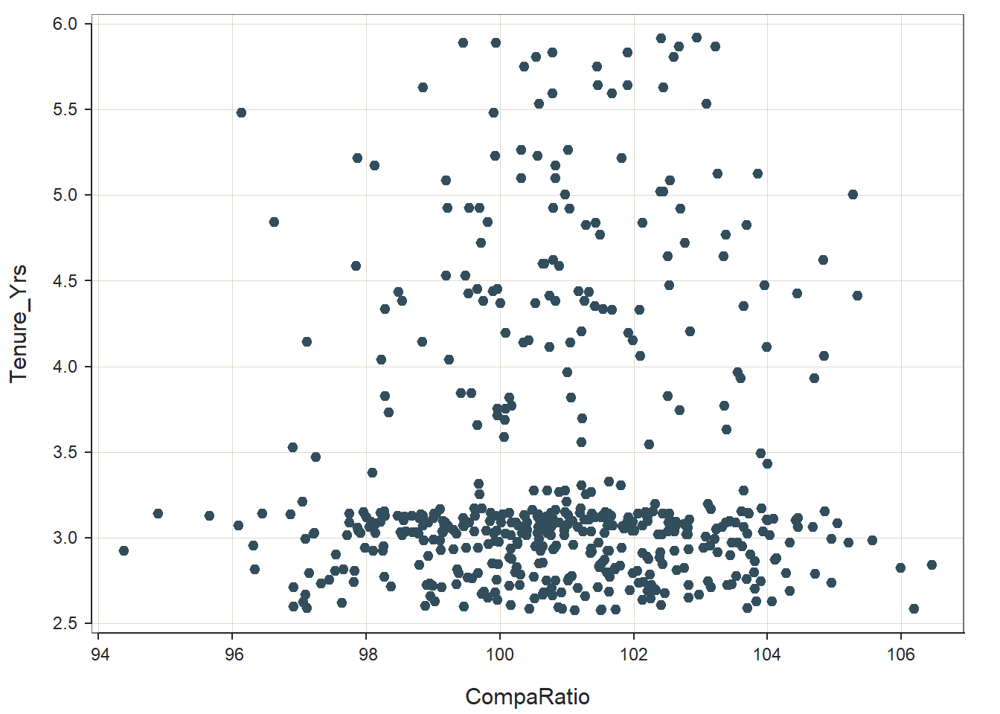
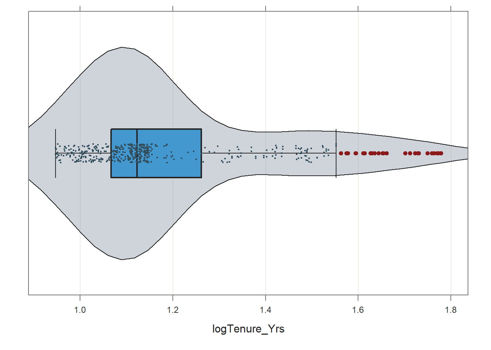

Chapter 60 Computing Compa-Ratios & Investigating Pay Compression
In this chapter, we will learn how to compute compa-ratios, generate scatter plots, and evaluate whether there might be evidence of pay compression or even pay inversion. The compa ratio is a useful tool for determining how well an organizations actual pay practices are adhering to its pay policies.
60.1 Conceptual Overview
A compa-ratio is an HR metric that indicates how well an employee is actually paid (or a group of employees are paid) relative to the midpoint of their pay grade. The compa-ratio is a useful metric for determining how well an organization is adhering to its espoused pay policy, and when coupled with other information, such as employee tenure, the compa-ratio can be used to detect whether pay compression and pay inversion exist.
The compa-ratio for an employee is simple to compute, and the formula is as follows.
\(C_{employee} = \frac{Pay}{MidPoint} \times 100\)
where \(Pay\) refers to the total pay of the employee (e.g., base and variable pay combined), and \(MidPoint\) refers to the midpoint of the pay grade in which the employee is situated.
To compute the compa-ratio for a group of employees, we can use the following formula.
\(C_{group} = \overline{C}_{employee}\)
where \(\overline{C}_{employee}\) refers to the average compa-ratio for a group of employees.
60.1.1 Conceptual Videos
For a more in-depth review of compa-ratios and adherence to pay policies, please check out the following conceptual video.
Link to conceptual video: https://youtu.be/zGXVjDw_vX4
60.2 Tutorial
This chapters tutorial demonstrates how to compute compa-ratios and generate scatter plots in R.
60.2.1 Video Tutorial
As usual, you have the choice to follow along with the written tutorial in this chapter or to watch the video tutorial below.
Link to video tutorial: https://youtu.be/nERabUWTubA
60.2.2 Functions & Packages Introduced
| Function | Package |
|---|---|
mean |
base R |
range |
base R |
as.Date |
base R |
class |
base R |
as.numeric |
base R |
ScatterPlot |
lessR |
Plot |
lessR |
Correlation |
lessR |
log |
base R |
60.2.3 Initial Steps
If you havent already, save the files called PData.csv and CData.csv into a folder that you will subsequently set as your working directory. Your working directory will likely be different than the one shown below (i.e., "H:/RWorkshop"). As a reminder, you can access all of the data files referenced in this book by downloading them as a compressed (zipped) folder from the my GitHub site: https://github.com/davidcaughlin/R-Tutorial-Data-Files; once youve followed the link to GitHub, just click Code (or Download) followed by Download ZIP, which will download all of the data files referenced in this book. For the sake of parsimony, I recommend downloading all of the data files into the same folder on your computer, which will allow you to set that same folder as your working directory for each of the chapters in this book.
Next, using the setwd function, set your working directory to the folder in which you saved the data files for this chapter. Alternatively, you can manually set your working directory folder in your drop-down menus by going to Session > Set Working Directory > Choose Directory. Be sure to create a new R script file (.R) or update an existing R script file so that you can save your script and annotations. If you need refreshers on how to set your working directory and how to create and save an R script, please refer to Setting a Working Directory and Creating & Saving an R Script.
# Set your working directory
setwd("H:/RWorkshop")Next, read in the .csv data files called PData.csv and CData.csv using your choice of read function. In this example, I use the read_csv function from the readr package (Wickham, Hester, and Bryan 2023). If you choose to use the read_csv function, be sure that you have installed and accessed the readr package using the install.packages and library functions. Note: You dont need to install a package every time you wish to access it; in general, I would recommend updating a package installation once ever 1-3 months. For refreshers on installing packages and reading data into R, please refer to Packages and Reading Data into R.
# Install readr package if you haven't already
# [Note: You don't need to install a package every
# time you wish to access it]
install.packages("readr")# Access readr package
library(readr)
# Read data and name data frame (tibble) objects
PersonalData <- read_csv("PData.csv")## Rows: 521 Columns: 7
## Column specification
## Delimiter: ","
## chr (5): StartDate, Sex, RaceEthnicity, Disability, Veteran
## dbl (2): EmployeeID, Age_2018
##
## Use `spec()` to retrieve the full column specification for this data.
## Specify the column types or set `show_col_types = FALSE` to quiet this message.CompensationData <- read_csv("CData.csv")## Rows: 521 Columns: 4
## Column specification
## Delimiter: ","
## chr (1): PayGrade
## dbl (3): EmployeeID, BasePay_2018, VariablePay_2018
##
## Use `spec()` to retrieve the full column specification for this data.
## Specify the column types or set `show_col_types = FALSE` to quiet this message.# Install dplyr package if you haven't already
install.packages("dplyr")# Access dplyr package
library(dplyr)
# Full join (merge) without pipes
MergedDF <- full_join(PersonalData, CompensationData, by="EmployeeID")
# Print variable names in joined (merged) data frame (tibble) object
names(MergedDF)## [1] "EmployeeID" "StartDate" "Sex" "RaceEthnicity" "Age_2018" "Disability"
## [7] "Veteran" "PayGrade" "BasePay_2018" "VariablePay_2018"# Print variable type for each variable in data frame (tibble) object
str(MergedDF)## spc_tbl_ [521 10] (S3: spec_tbl_df/tbl_df/tbl/data.frame)
## $ EmployeeID : num [1:521] 1001 1002 1003 1004 1005 ...
## $ StartDate : chr [1:521] "1/29/2013" "2/1/2013" "2/10/2013" "2/10/2013" ...
## $ Sex : chr [1:521] "Male" "Male" "Male" "Female" ...
## $ RaceEthnicity : chr [1:521] "White" "White" "White" "Black" ...
## $ Age_2018 : num [1:521] 38.1 33.8 31.8 38.9 32 ...
## $ Disability : chr [1:521] "No" "No" "No" "No" ...
## $ Veteran : chr [1:521] "No" "No" "No" "No" ...
## $ PayGrade : chr [1:521] "C" "C" "C" "C" ...
## $ BasePay_2018 : num [1:521] 43837 42873 42414 42398 43253 ...
## $ VariablePay_2018: num [1:521] 12777 13453 12553 12300 13217 ...
## - attr(*, "spec")=
## .. cols(
## .. EmployeeID = col_double(),
## .. StartDate = col_character(),
## .. Sex = col_character(),
## .. RaceEthnicity = col_character(),
## .. Age_2018 = col_double(),
## .. Disability = col_character(),
## .. Veteran = col_character()
## .. )
## - attr(*, "problems")=<externalptr># Print first 6 rows of data frame (tibble) object
head(MergedDF)## # A tibble: 6 10
## EmployeeID StartDate Sex RaceEthnicity Age_2018 Disability Veteran PayGrade BasePay_2018 VariablePay_2018
## <dbl> <chr> <chr> <chr> <dbl> <chr> <chr> <chr> <dbl> <dbl>
## 1 1001 1/29/2013 Male White 38.1 No No C 43837 12777
## 2 1002 2/1/2013 Male White 33.8 No No C 42873 13453
## 3 1003 2/10/2013 Male White 31.8 No No C 42414 12553
## 4 1004 2/10/2013 Female Black 38.8 No No C 42398 12300
## 5 1005 2/18/2013 Female Asian 32.0 No No C 43253 13217
## 6 1006 2/18/2013 Male White 34.4 No No C 44038 12729# Print number of rows in data frame (tibble) object
nrow(MergedDF)## [1] 521There are 10 variables and 56 cases (i.e., employees) in the MergedDF data frame: EmployeeID, StartDate, Sex, RaceEthnicity, Age_2018, Disability, Veteran, PayGrade, BasePay_2018, and VariablePay_2018. In this tutorial, we will focus on the StartDate, BasePay_2018, and VariablePay_2018 variables. Please note that the StartDate variable is of type character and not Date; we will need to change this later on.
60.2.4 Compute Compa-Ratio for Each Employee
The compa-ratio reflects how much an employee is actually paid a given pay grade relative to the midpoint of the pay grade. For this pay grade, we will assume that the pay policy specifies the midpoint for total compensation (base pay + variable pay) as $55,000 per year.
To begin, we need to create a total pay (i.e., total compensation) variable by calculating the sum of base and variable pay for each employee. Lets name this new variable TotalPay_2018. First, type MergedDF$TotalPay_2018 followed by the <- assignment operator to specify what you would like to name your new variable (TotalPay_2018). Second, add the BasePay_2018 variable to the VariablePay_2018 variable using the + operator.
# Create TotalPay variable
MergedDF$TotalPay_2018 <- MergedDF$BasePay_2018 + MergedDF$VariablePay_2018Next, to compute the compa-ratio for each employee, first, type MergedDF$CompaRatio followed by the <- assignment operator to create and name a new variable called CompaRatio. Second, divide the TotalPay_2018 variable values by the midpoint value for the pay grade ($55,000) using the division operator (/). Third, multiply the resulting quotient by 100 to convert the ratio to a percentage (using the multiplication * operator).
# Create CompaRatio variable
MergedDF$CompaRatio <- (MergedDF$TotalPay_2018 / 55000) * 100
# Print vector of compa-ratios
print(MergedDF$CompaRatio)## [1] 102.93455 102.41091 99.94000 99.45091 102.67273 103.21273 100.78000 101.91091 102.59818 100.54182 100.36182 101.45273
## [13] 101.45818 101.91091 98.84545 102.44182 100.78727 101.67273 100.58545 103.08545 96.13091 99.90727 101.01273 100.31636
## [25] 99.92545 100.55818 101.81455 97.87091 98.13091 100.82182 103.85636 103.25091 100.31091 100.82545 102.53636 99.19818
## [37] 102.39455 102.43818 100.97636 105.27091 99.21273 99.69091 99.53455 100.79455 102.69273 101.04182 96.62182 99.81455
## [49] 102.13273 101.42909 101.28000 103.68364 103.37818 101.49455 102.76545 99.71455 103.34182 102.51091 104.83091 100.79455
## [61] 100.63455 100.65636 100.88727 97.85273 99.19818 99.47818 102.52364 103.95636 99.96364 99.65455 99.89636 101.16909
## [73] 98.48000 101.32545 104.44364 99.52727 105.34000 100.74364 100.82182 99.74727 98.53273 101.25818 100.00182 100.52909
## [85] 103.63455 101.42182 98.28000 101.53818 102.08727 101.67273 101.21091 102.84182 101.91636 100.08364 100.42545 101.98000
## [97] 98.83636 97.11818 101.04727 100.34909 103.98545 100.73455 104.83818 102.08909 98.22364 99.24182 103.55273 101.00727
## [109] 103.59818 104.69455 99.41455 99.57636 98.28182 102.50182 101.05818 100.13273 103.34545 100.16909 100.08364 99.96000
## [121] 102.68182 98.33455 99.95818 101.23273 100.07636 99.65636 103.38909 100.06545 101.21273 102.22727 96.90545 103.89636
## [133] 97.25273 103.99455 98.09273 101.63273 99.67818 101.21636 101.80727 100.70545 100.50909 103.63455 100.97091 100.88545
## [145] 101.36545 99.69818 101.27818 97.04364 100.99455 102.31636 103.10909 99.72727 101.20545 103.90545 99.61455 99.10000
## [157] 103.15091 100.82182 100.48182 103.61091 104.85636 98.27273 102.28364 102.17273 97.95455 100.96909 101.57636 99.86364
## [169] 103.70909 100.13636 98.21818 100.75636 101.19091 94.88727 102.06545 97.74545 101.61455 96.45091 99.05091 101.37091
## [181] 103.71455 102.42545 102.44000 99.01273 102.53091 98.81636 96.86727 100.03455 100.57636 102.18545 100.36000 101.01636
## [193] 101.60182 101.52364 99.92364 98.84364 98.28182 101.66545 98.46545 95.66364 99.62909 98.68364 100.36909 102.20545
## [205] 98.57455 100.69818 100.55636 101.51091 101.91636 100.72182 98.00000 101.42182 100.78727 98.79818 99.00364 99.44364
## [217] 104.44727 104.08545 101.59455 103.98545 102.82545 101.32727 101.26364 104.41273 100.59636 103.99636 98.55455 102.20727
## [229] 101.08000 103.42545 99.85455 99.48182 99.14727 98.21273 102.61273 103.42000 98.07455 101.98000 102.62545 100.23273
## [241] 98.93091 103.51636 100.40182 103.37273 100.01273 102.51273 99.54182 100.88727 99.17818 100.85455 101.89273 100.16727
## [253] 97.74364 105.03636 98.14727 100.66000 100.68182 101.01818 102.74545 100.94727 98.84545 100.26909 102.56182 99.45091
## [265] 96.09455 101.67818 99.16545 101.60182 102.12727 99.23091 100.60909 102.78182 100.76909 101.82545 99.45818 104.44727
## [277] 103.31636 100.57455 104.67636 103.63455 98.04727 102.61636 101.15818 100.59455 99.23455 102.81091 97.87091 101.85455
## [289] 100.35091 103.24000 103.23273 99.30364 100.61818 100.40182 101.97091 100.96364 102.01091 100.39091 99.79455 97.88364
## [301] 102.53273 99.94727 98.59818 99.61818 103.93273 101.24000 102.50545 101.36182 102.61091 99.13273 98.51091 99.14727
## [313] 98.69818 98.77455 97.91636 98.13636 100.56545 97.22182 100.70364 101.55636 99.90909 100.32545 100.08364 99.34364
## [325] 103.69636 98.78000 97.21273 102.41455 102.80364 102.77818 102.36182 100.95818 104.03273 100.15636 100.76364 98.53818
## [337] 100.38909 97.71091 103.07091 97.09091 103.20909 100.58545 104.94909 99.00909 98.85455 105.56727 99.10727 99.93091
## [349] 99.98182 100.25818 104.32364 103.45818 103.55455 105.20364 101.46727 100.25818 99.82727 101.08909 100.84182 103.13636
## [361] 100.55091 96.31818 98.26364 103.61455 100.53091 100.64000 99.49455 97.98182 100.81818 99.67636 101.81273 103.03818
## [373] 100.16545 101.36182 99.30000 102.81455 100.79273 99.11091 101.62545 98.10000 101.60545 100.60909 98.25273 102.60727
## [385] 94.38182 101.37091 103.25455 102.39455 101.35091 102.12364 97.55273 103.73818 103.43455 98.92182 102.18909 100.14000
## [397] 102.38545 104.12909 102.21273 100.17455 104.10182 101.56182 103.80182 100.64182 99.88000 101.51091 100.58727 99.96727
## [409] 102.42364 98.79091 106.45273 101.48182 101.79818 100.25273 101.48182 105.98545 102.74727 101.72182 97.65455 99.36000
## [421] 101.71273 96.34000 102.63818 102.05273 97.53636 97.82182 103.79273 100.23091 101.59818 97.14727 101.98000 99.67636
## [433] 104.27455 99.38000 104.70364 100.30000 102.24182 101.07091 103.53273 101.63818 100.50909 98.26545 99.51636 99.58000
## [445] 101.02909 103.68182 97.44727 99.94909 100.68909 101.01818 100.83091 103.10545 103.89636 102.14182 97.82000 102.07455
## [457] 104.94909 97.32909 98.94545 99.34909 103.46727 100.29818 98.90000 103.40000 102.82182 103.41636 102.25636 98.99818
## [469] 100.14182 98.37091 96.91455 101.46364 103.15455 99.12364 100.76909 101.16000 103.80364 102.32182 102.32364 101.94000
## [481] 104.32727 102.20182 99.76182 101.62545 100.91636 99.92182 100.64909 102.45636 99.72545 102.97636 97.08727 100.64000
## [493] 100.78727 98.95636 101.27091 102.82000 99.81091 102.24909 100.51455 102.13273 99.96364 99.02545 104.06727 103.83273
## [505] 97.06182 97.63273 102.40182 100.16000 98.88182 99.46000 96.91273 100.87091 97.10909 103.69636 100.43455 106.18727
## [517] 100.92727 101.51091 101.73091 101.50727 101.11273Employees with compa-ratios that are equal to 100% are paid at the midpoint for the pay grade. Employees with compa-ratios that are greater than 100% are paid more than the midpoint for their pay grade, and employees with compa-ratios that are less than 100% are paid less than the midpoint. There are rules of thumb for what can be considered large and small compa-ratios (e.g., 80% vs.120%), but generally speaking, interpreting compa-ratio values should be based upon the width of the specific pay grade in question, as well as other organizational factors (e.g., pay philosophy).
60.2.5 Compute Compa-Ratio for Group of Employees
To compute the compa-ratio for an entire group of employees, apply the mean function from base R to the new CompaRatio variable.
# Calculate mean
mean(MergedDF$CompaRatio, na.rm=TRUE)## [1] 100.9211The value of 100.705 indicates that the organization is paying employees at 101% of the pay grade midpoint, which is a pretty good sign in terms of adherence to the pay policy midpoint for the grade. We would likely be very concerned if we instead saw a group compa-ratio of 75% or 125%.
60.2.6 Investigate Pay Compression and Pay Inversion
While computing the mean compa-ratio value for a group of employees is useful, by itself, it does not provide us with direct evidence of pay compression or pay inversion. The scatter plot data visualization can be useful in this regard, particularly when we associate employee tenure with compa-ratio. Because we currently only have a start date (StartDate) variable in our data frame, we need to create a new variable that represents tenure.
To create a new variable that we will call Tenure, we need to subtract employees start date (StartDate) values from some more recent date, which in this case is December 31, 2018 ("2018-12-31"). First, type MergedDF$Tenure followed by the <- assignment operator to inform R that you wish to create and name new variable called Tenure and append it to the existing MergedDF data frame using the $ operator. Second, enter the as.Date function from base R with "2018-12-31" as the sole parenthetical argument; this is the more recent date from which we will subtract StartDate values. Third, enter the subtraction operator (-). Fourth, earlier we found that the StartDate variable is of type character and not Date; consequently, we need to convert it to type Date by applying the as.Date function, with the name of the data frame (MergedDF), $ operator, and name of the start date (StartDate) variable as the first argument, and format="%m/%d/%Y" as the second argument.
# Create Tenure variable
MergedDF$Tenure <- as.Date("2018-12-31") - as.Date(MergedDF$StartDate, format="%m/%d/%Y")Take a look at the vector of values that belong to the new Tenure variable that we just added to the MergedDF data frame. When applying arithmetic to variables of type Date, the resulting variables/output will be of the unit days. That is, when you see the value of 2142 for Tenure, it refers to 2,142 days of employment.
# Print vector of Tenure variable values
print(MergedDF$Tenure)## Time differences in days
## [1] 2162 2159 2150 2150 2142 2142 2130 2130 2120 2120 2100 2100 2060 2060 2055 2055 2043 2043 2021 2021 2001 2001 1922 1922
## [25] 1909 1909 1905 1905 1889 1889 1872 1872 1862 1862 1857 1857 1833 1833 1827 1827 1799 1799 1799 1799 1797 1797 1768 1768
## [49] 1767 1767 1762 1762 1741 1741 1724 1724 1696 1696 1688 1688 1679 1679 1675 1675 1655 1655 1634 1634 1626 1626 1621 1621
## [73] 1619 1619 1616 1616 1612 1612 1600 1600 1600 1600 1596 1596 1590 1590 1583 1583 1581 1581 1536 1536 1533 1533 1516 1516
## [97] 1514 1514 1511 1511 1503 1503 1484 1484 1475 1475 1449 1449 1436 1436 1404 1404 1397 1397 1394 1394 1377 1377 1370 1370
## [121] 1368 1363 1357 1350 1347 1336 1326 1311 1299 1294 1289 1275 1268 1253 1235 1215 1211 1208 1208 1197 1197 1197 1197 1194
## [145] 1194 1189 1189 1172 1172 1168 1168 1159 1159 1159 1159 1157 1157 1156 1156 1152 1152 1152 1152 1151 1151 1150 1150 1149
## [169] 1149 1149 1149 1149 1149 1148 1148 1147 1147 1147 1147 1147 1147 1147 1147 1147 1147 1146 1146 1146 1146 1144 1144 1144
## [193] 1144 1143 1143 1143 1143 1142 1142 1142 1142 1142 1142 1141 1141 1141 1141 1140 1140 1140 1140 1140 1140 1138 1138 1138
## [217] 1138 1136 1136 1134 1134 1134 1134 1133 1133 1133 1133 1131 1131 1131 1131 1131 1131 1130 1130 1130 1130 1130 1130 1129
## [241] 1129 1128 1128 1128 1128 1128 1128 1128 1128 1128 1128 1128 1128 1127 1127 1126 1126 1126 1126 1122 1122 1122 1122 1122
## [265] 1122 1122 1122 1122 1122 1121 1121 1120 1120 1120 1120 1119 1119 1119 1119 1119 1119 1119 1119 1118 1118 1118 1118 1116
## [289] 1116 1116 1114 1113 1113 1113 1111 1111 1111 1111 1111 1111 1111 1111 1110 1110 1110 1110 1110 1110 1109 1109 1108 1108
## [313] 1108 1108 1107 1107 1107 1107 1106 1106 1106 1106 1105 1105 1105 1105 1105 1103 1103 1103 1103 1102 1102 1102 1101 1101
## [337] 1101 1101 1099 1094 1094 1094 1093 1092 1091 1090 1090 1089 1088 1088 1086 1085 1085 1085 1085 1083 1082 1081 1080 1080
## [361] 1080 1080 1078 1078 1077 1077 1075 1075 1075 1075 1074 1074 1073 1073 1072 1072 1072 1070 1069 1069 1069 1069 1068 1068
## [385] 1068 1066 1065 1065 1064 1063 1061 1060 1058 1057 1056 1054 1054 1053 1051 1051 1049 1049 1046 1043 1042 1041 1041 1040
## [409] 1039 1038 1038 1037 1036 1034 1034 1032 1032 1031 1029 1029 1028 1028 1027 1026 1026 1025 1023 1022 1022 1021 1021 1021
## [433] 1020 1020 1019 1017 1017 1015 1015 1013 1013 1012 1011 1010 1010 1008 1007 1006 1005 1005 1005 1004 1004 1002 1002 1000
## [457] 1000 999 998 997 997 996 996 996 995 995 995 994 994 992 991 991 990 990 989 989 988 986 985 984
## [481] 983 983 981 981 979 979 979 978 977 975 975 974 973 971 971 969 968 967 967 964 963 961 960 960
## [505] 959 958 953 952 951 950 949 948 947 946 945 945 944 943 943 941 941Using the class function from base R, lets check the variable type for just the Tenure variable.
# Check variable type/class of Tenure variable
class(MergedDF$Tenure)## [1] "difftime"As you can see, the Tenure variable is of a special numeric type called difftime. Lets apply the as.numeric function from base R to convert the Tenure variable to a traditional variable of type numeric. Before the as.numeric function, we type MergedDF$Tenure followed by the <- assignment operator to overwrite the existing Tenure variable in our MergedDF data frame.
# Convert Tenure variable to numeric type
MergedDF$Tenure <- as.numeric(MergedDF$Tenure)To make sure that worked, lets apply the class function once more. The conversion worked.
# Check variable type/class of Tenure variable
class(MergedDF$Tenure)## [1] "numeric"Next, divide the Tenure variable values by 365 to get an estimate of how many years (as opposed to days) each employee has worked in their current pay grade, which is how we are defining tenure in this context. Before our subtraction equation, we type MergedDF$Tenure_Yrs <- to create a new variable called Tenure_Yrs that will be appended to our MergedDF data frame.
# Create Tenure_Yrs variable
MergedDF$Tenure_Yrs <- MergedDF$Tenure / 365Take a look at the vector of values that belong to the new Tenure_Yrs variable that we just added to the MergedDF data frame. The values are now in the unit years.
# Print vector of Tenure_Yrs variable values
print(MergedDF$Tenure_Yrs)## [1] 5.923288 5.915068 5.890411 5.890411 5.868493 5.868493 5.835616 5.835616 5.808219 5.808219 5.753425 5.753425 5.643836
## [14] 5.643836 5.630137 5.630137 5.597260 5.597260 5.536986 5.536986 5.482192 5.482192 5.265753 5.265753 5.230137 5.230137
## [27] 5.219178 5.219178 5.175342 5.175342 5.128767 5.128767 5.101370 5.101370 5.087671 5.087671 5.021918 5.021918 5.005479
## [40] 5.005479 4.928767 4.928767 4.928767 4.928767 4.923288 4.923288 4.843836 4.843836 4.841096 4.841096 4.827397 4.827397
## [53] 4.769863 4.769863 4.723288 4.723288 4.646575 4.646575 4.624658 4.624658 4.600000 4.600000 4.589041 4.589041 4.534247
## [66] 4.534247 4.476712 4.476712 4.454795 4.454795 4.441096 4.441096 4.435616 4.435616 4.427397 4.427397 4.416438 4.416438
## [79] 4.383562 4.383562 4.383562 4.383562 4.372603 4.372603 4.356164 4.356164 4.336986 4.336986 4.331507 4.331507 4.208219
## [92] 4.208219 4.200000 4.200000 4.153425 4.153425 4.147945 4.147945 4.139726 4.139726 4.117808 4.117808 4.065753 4.065753
## [105] 4.041096 4.041096 3.969863 3.969863 3.934247 3.934247 3.846575 3.846575 3.827397 3.827397 3.819178 3.819178 3.772603
## [118] 3.772603 3.753425 3.753425 3.747945 3.734247 3.717808 3.698630 3.690411 3.660274 3.632877 3.591781 3.558904 3.545205
## [131] 3.531507 3.493151 3.473973 3.432877 3.383562 3.328767 3.317808 3.309589 3.309589 3.279452 3.279452 3.279452 3.279452
## [144] 3.271233 3.271233 3.257534 3.257534 3.210959 3.210959 3.200000 3.200000 3.175342 3.175342 3.175342 3.175342 3.169863
## [157] 3.169863 3.167123 3.167123 3.156164 3.156164 3.156164 3.156164 3.153425 3.153425 3.150685 3.150685 3.147945 3.147945
## [170] 3.147945 3.147945 3.147945 3.147945 3.145205 3.145205 3.142466 3.142466 3.142466 3.142466 3.142466 3.142466 3.142466
## [183] 3.142466 3.142466 3.142466 3.139726 3.139726 3.139726 3.139726 3.134247 3.134247 3.134247 3.134247 3.131507 3.131507
## [196] 3.131507 3.131507 3.128767 3.128767 3.128767 3.128767 3.128767 3.128767 3.126027 3.126027 3.126027 3.126027 3.123288
## [209] 3.123288 3.123288 3.123288 3.123288 3.123288 3.117808 3.117808 3.117808 3.117808 3.112329 3.112329 3.106849 3.106849
## [222] 3.106849 3.106849 3.104110 3.104110 3.104110 3.104110 3.098630 3.098630 3.098630 3.098630 3.098630 3.098630 3.095890
## [235] 3.095890 3.095890 3.095890 3.095890 3.095890 3.093151 3.093151 3.090411 3.090411 3.090411 3.090411 3.090411 3.090411
## [248] 3.090411 3.090411 3.090411 3.090411 3.090411 3.090411 3.087671 3.087671 3.084932 3.084932 3.084932 3.084932 3.073973
## [261] 3.073973 3.073973 3.073973 3.073973 3.073973 3.073973 3.073973 3.073973 3.073973 3.071233 3.071233 3.068493 3.068493
## [274] 3.068493 3.068493 3.065753 3.065753 3.065753 3.065753 3.065753 3.065753 3.065753 3.065753 3.063014 3.063014 3.063014
## [287] 3.063014 3.057534 3.057534 3.057534 3.052055 3.049315 3.049315 3.049315 3.043836 3.043836 3.043836 3.043836 3.043836
## [300] 3.043836 3.043836 3.043836 3.041096 3.041096 3.041096 3.041096 3.041096 3.041096 3.038356 3.038356 3.035616 3.035616
## [313] 3.035616 3.035616 3.032877 3.032877 3.032877 3.032877 3.030137 3.030137 3.030137 3.030137 3.027397 3.027397 3.027397
## [326] 3.027397 3.027397 3.021918 3.021918 3.021918 3.021918 3.019178 3.019178 3.019178 3.016438 3.016438 3.016438 3.016438
## [339] 3.010959 2.997260 2.997260 2.997260 2.994521 2.991781 2.989041 2.986301 2.986301 2.983562 2.980822 2.980822 2.975342
## [352] 2.972603 2.972603 2.972603 2.972603 2.967123 2.964384 2.961644 2.958904 2.958904 2.958904 2.958904 2.953425 2.953425
## [365] 2.950685 2.950685 2.945205 2.945205 2.945205 2.945205 2.942466 2.942466 2.939726 2.939726 2.936986 2.936986 2.936986
## [378] 2.931507 2.928767 2.928767 2.928767 2.928767 2.926027 2.926027 2.926027 2.920548 2.917808 2.917808 2.915068 2.912329
## [391] 2.906849 2.904110 2.898630 2.895890 2.893151 2.887671 2.887671 2.884932 2.879452 2.879452 2.873973 2.873973 2.865753
## [404] 2.857534 2.854795 2.852055 2.852055 2.849315 2.846575 2.843836 2.843836 2.841096 2.838356 2.832877 2.832877 2.827397
## [417] 2.827397 2.824658 2.819178 2.819178 2.816438 2.816438 2.813699 2.810959 2.810959 2.808219 2.802740 2.800000 2.800000
## [430] 2.797260 2.797260 2.797260 2.794521 2.794521 2.791781 2.786301 2.786301 2.780822 2.780822 2.775342 2.775342 2.772603
## [443] 2.769863 2.767123 2.767123 2.761644 2.758904 2.756164 2.753425 2.753425 2.753425 2.750685 2.750685 2.745205 2.745205
## [456] 2.739726 2.739726 2.736986 2.734247 2.731507 2.731507 2.728767 2.728767 2.728767 2.726027 2.726027 2.726027 2.723288
## [469] 2.723288 2.717808 2.715068 2.715068 2.712329 2.712329 2.709589 2.709589 2.706849 2.701370 2.698630 2.695890 2.693151
## [482] 2.693151 2.687671 2.687671 2.682192 2.682192 2.682192 2.679452 2.676712 2.671233 2.671233 2.668493 2.665753 2.660274
## [495] 2.660274 2.654795 2.652055 2.649315 2.649315 2.641096 2.638356 2.632877 2.630137 2.630137 2.627397 2.624658 2.610959
## [508] 2.608219 2.605479 2.602740 2.600000 2.597260 2.594521 2.591781 2.589041 2.589041 2.586301 2.583562 2.583562 2.578082
## [521] 2.578082By applying the mean and range functions from base R, we see that the average tenure (in years) for these employees is 3.46 years, the minimum tenure is 2.58 years, and the maximum tenure is 5.87 years.
# Compute mean for Tenure_Yrs variable
mean(MergedDF$Tenure_Yrs, na.rm=TRUE)## [1] 3.387185# Compute range for Tenure_Yrs variable
range(MergedDF$Tenure_Yrs, na.rm=TRUE)## [1] 2.578082 5.923288To visualize the relationship between CompaRatio and Tenure_Yrs (to search for evidence of pay compression/inversion), we will create a scatter plot using the ScatterPlot function from the lessR package (Gerbing, Business, and University 2021). If you havent already, install and access the lessR package.
# Install lessR package
install.packages("lessR")# Access lessR package
library(lessR)To apply the ScatterPlot function, first, type the name of the function. As the first argument, type the variable name you wish to be displayed on the x-axis (CompaRatio). As the second argument, type the variable name you wish to be displayed on the y-axis (Tenure_Yrs). Finally, enter data= followed by the name of the data frame (MergedDF) to which the two variables belong.
# Create scatterplot between CompaRatio & Tenure_Yrs
ScatterPlot(CompaRatio, Tenure_Yrs, data=MergedDF)
## --- Pearson's product-moment correlation ---
##
## Number of paired values with neither missing, n = 521
## Sample Correlation of CompaRatio and Tenure_Yrs: r = 0.036
##
## Hypothesis Test of 0 Correlation: t = 0.821, df = 519, p-value = 0.412
## 95% Confidence Interval for Correlation: -0.050 to 0.122
## The scatter plot (visually) reveals a slight positive relationship between compa-ratios and tenure. That said, a clear pattern or trend is not easy to discern from this scatterplot. Rather, the main take-away from the scatterplot is that a lot of employees were hired more recently, which suggests that the Tenure_Yrs variable has a skewed distribution. Lets use the Plot function from lessR to look at the distribution for Tenure_Yrs by itself.
# Create violin-box-scatter (VBS) plot of Tenure_Yrs variable
Plot(Tenure_Yrs, data=MergedDF)## [Violin/Box/Scatterplot graphics from Deepayan Sarkar's lattice package]
##
## >>> Suggestions
## Plot(Tenure_Yrs, out_cut=2, fences=TRUE, vbs_mean=TRUE) # Label two outliers ...
## Plot(Tenure_Yrs, box_adj=TRUE) # Adjust boxplot whiskers for asymmetry## --- Tenure_Yrs ---
## Present: 521
## Missing: 0
## Total : 521
##
## Mean : 3.3871848
## Stnd Dev : 0.8141023
## IQR : 0.6246575
## Skew : 0.4893617 [medcouple, -1 to 1]
##
## Minimum : 2.5780822
## Lower Whisker: 2.5780822
## 1st Quartile : 2.9068493
## Median : 3.0739726
## 3rd Quartile : 3.5315068
## Upper Whisker: 4.4547945
## Maximum : 5.9232877
##
##
## --- Outliers --- from the box plot: 68
##
## Small Large
## ----- -----
## 5.923288
## 5.915068
## 5.890411
## 5.890411
## 5.868493
## 5.868493
## 5.835616
## 5.835616
## 5.808219
## 5.808219
## 5.753425
## 5.753425
## 5.643836
## 5.643836
## 5.630137
## 5.630137
## 5.597260
## 5.597260
##
## + 50 more outliers
##
## Max Dupli-
## Level cations Values
## ------------------------------
## Tenure_Yrs 12 3.09041095890411
##
## Parameter values (can be manually set)
## -------------------------------------------------------
## size: 0.26 size of plotted points
## out_size: 0.68 size of plotted outlier points
## jitter_y: 1.98 random vertical movement of points
## jitter_x: 0.33 random horizontal movement of points
## bw: 0.31 set bandwidth higher for smoother edgesNote how the distribution is positively skewed, which shows univariate deviation from normality for the Tenure_Yrs variable. The skewness statistic in the Plot output confirms this positive skewness (.545), but that skewness statistic is not too worrisome by most standards; meaning, we could probably feel comfortable using the Tenure_Yrs variable without transforming it.
Despite the not-very-concerning amount of positive skewness for the Tenure_Yrs variable, lets take this opportunity to practice transforming a variable using a logarithmic (log) transformation. Specifically, lets transform the Tenure_Yrs variable using a natural log transformation. To do so, we can use the log function from base R, and lets call the new variable logTenure_Yrs.
# Create logTenure variable
MergedDF$logTenure_Yrs <- log(MergedDF$Tenure_Yrs)Now, lets take a look at the univariate distribution of the new logTenure_Yrs variable we just created.
# Create violin-box-scatter (VBS) plot of logTenure_Yrs variable
Plot(logTenure_Yrs, data=MergedDF)## [Violin/Box/Scatterplot graphics from Deepayan Sarkar's lattice package]
##
## >>> Suggestions
## Plot(logTenure_Yrs, out_cut=2, fences=TRUE, vbs_mean=TRUE) # Label two outliers ...
## Plot(logTenure_Yrs, box_adj=TRUE) # Adjust boxplot whiskers for asymmetry
## --- logTenure_Yrs ---
## Present: 521
## Missing: 0
## Total : 521
##
## Mean : 1.19585433
## Stnd Dev : 0.21065883
## IQR : 0.19465486
## Skew : 0.41943846 [medcouple, -1 to 1]
##
## Minimum : 0.94704579
## Lower Whisker: 0.94704579
## 1st Quartile : 1.06706979
## Median : 1.12297073
## 3rd Quartile : 1.26172465
## Upper Whisker: 1.55250510
## Maximum : 1.77889164
##
##
## --- Outliers --- from the box plot: 54
##
## Small Large
## ----- -----
## 1.7788916
## 1.7775031
## 1.7733258
## 1.7733258
## 1.7695979
## 1.7695979
## 1.7639799
## 1.7639799
## 1.7592740
## 1.7592740
## 1.7497953
## 1.7497953
## 1.7305639
## 1.7305639
## 1.7281338
## 1.7281338
## 1.7222772
## 1.7222772
##
## + 36 more outliers
##
## Max Dupli-
## Level cations Values
## ------------------------------
## logTenure_Yrs 12 1.12830407847551
##
## Parameter values (can be manually set)
## -------------------------------------------------------
## size: 0.26 size of plotted points
## out_size: 0.68 size of plotted outlier points
## jitter_y: 1.98 random vertical movement of points
## jitter_x: 0.33 random horizontal movement of points
## bw: 0.10 set bandwidth higher for smoother edgesThe positive skewness shows some improvement in the logTenure_Yrs variable but not much. Nevertheless, for the sake of demonstration, lets create a scatter plot using CompaRatio the new transformed variable called (logTenure_Yrs).
# Create scatterplot between CompaRatio & logTenure_Yrs
ScatterPlot(CompaRatio, logTenure_Yrs, data=MergedDF)## --- Pearson's product-moment correlation ---
##
## Number of paired values with neither missing, n = 521
## Sample Correlation of CompaRatio and logTenure_Yrs: r = 0.033
##
## Hypothesis Test of 0 Correlation: t = 0.752, df = 519, p-value = 0.452
## 95% Confidence Interval for Correlation: -0.053 to 0.119
## The scatterplot shows a slightly positive upward association. Now, lets use the Correlation function from lessR to see estimate whether a statistically significant association exists, and if so, how strong and in what direction. To apply the Correlation function, simply enter the name of the Correlation function, and within the parentheses, enter the same three arguments as you entered for the ScatterPlot function directly above. [Technically, we dont need to apply the Correlation function if we already applied the ScatterPlot function because the latter provides an estimate of the correlation coefficient. Nevertheless, it will make your script clearer and more interpretable if you clearly specify the Correlation function separately from the ScatterPlot function.]
# Compute correlation between CompaRatio & logTenure_Yrs
Correlation(CompaRatio, logTenure_Yrs, data=MergedDF)## Correlation Analysis for Variables CompaRatio and logTenure_Yrs
##
## --- Pearson's product-moment correlation ---
##
## Number of paired values with neither missing, n = 521
## Number of cases (rows of data) deleted: 0
##
## Sample Covariance: s = 0.014
##
## Sample Correlation: r = 0.033
##
## Hypothesis Test of 0 Correlation: t = 0.752, df = 519, p-value = 0.452
## 95% Confidence Interval for Correlation: -0.053 to 0.119We see that the correlation is statistically significant (p = .047). Further, the association between the two variables is positive and small-to-medium in magnitude (r = .266). Thus, there seems to be evidence that employees who are paid higher relative to their pay-grade midpoint tend to have held a job in that pay grade for a longer period of time, but remember, this is based on the tenure variable to which we applied a log-odds transformation; meaning, the interpretation isnt quite so simple. The slight-to-moderate positive association, however, is a relatively good sign as it means that the organization tends to pay employees more who have higher tenure, which is often at least partially consistent with most organizations pay policies/philosophies. If we had seen a negative association, that would have been perhaps suggestive of pay compression or even pay inversion within the pay grade.
60.2.7 Summary
In this chapter, we learned how to compute compa ratios and generate scatter plots to evaluate if pay compression might be an issue. The compa-ratio is a useful HR metric for assessing how an individual or group is paid relative to the pay midpoint. Calculating compa-ratios comes in handy when assessing pay compression or inversion. Scatter plots and correlations can also be applied to understand whether there is evidence of pay compression (or even pay inversion).